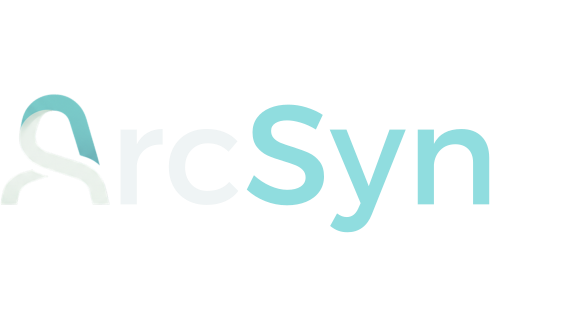

[Nome e tese em uma frase]
[Fluxo resumido, principal ganho e principal custo.]

Architecture decision guideComparativo de arquitetura · apoio à decisão
Este documento compara alternativas sem antecipar uma decisão final. Cada opção deve ser descrita pelo mesmo conjunto de critérios, com fatos separados de hipóteses e da avaliação qualitativa do autor.
Apresente a questão decisiva e a diferença essencial entre as alternativas.
[Explique por que não existe uma alternativa dominante sem confirmar contexto, volume, latência, semântica dos dados, capacidade dos times e restrições comerciais.]
[Fluxo resumido, principal ganho e principal custo.]
[Fluxo resumido, principal ganho e principal custo.]
[Fluxo resumido, principal ganho e principal custo.]
[Quais evidências transformam essa pergunta em uma decisão verificável?]
Declare o que precisa ser verdadeiro e como todas as alternativas serão avaliadas.
[Registre a principal incerteza que impede uma comparação puramente objetiva.]
[Liste hipóteses mensuráveis e identifique o que ainda não foi validado.]
[Explicite dependências entre equipes e disponibilidade operacional.]
[Ex.: escala, resiliência, latência, consistência, segurança e reversibilidade.]
[Ex.: licença, infraestrutura, implantação, operação e custo de oportunidade.]
[Tese curta que diferencia esta opção.]
[Explique em duas ou três frases o princípio da alternativa, o que ela preserva e de qual premissa depende.]
[Sistemas, serviços ou times que produzem o dado.]
[Onde o dado é transformado, consolidado ou governado.]
[API, eventos, sincronização, lote ou adaptador.]
[Como o destino recebe, identifica e aplica a mudança.]
[Descreva coerência, autonomia, velocidade, custo, escala ou simplicidade preservada.]
[Descreva custo, dependência, latência, coordenação ou complexidade adicional.]
[Declare as condições observáveis sob as quais esta alternativa funciona melhor.]
[Defina o limite, evidência ou mudança de contexto que reabre a análise.]
[Tese curta que diferencia esta opção.]
[Explique em duas ou três frases o princípio da alternativa, o que ela preserva e de qual premissa depende.]
[Sistemas, serviços ou times que produzem o dado.]
[Onde o dado é transformado, consolidado ou governado.]
[API, eventos, sincronização, lote ou adaptador.]
[Como o destino recebe, identifica e aplica a mudança.]
[Descreva coerência, autonomia, velocidade, custo, escala ou simplicidade preservada.]
[Descreva custo, dependência, latência, coordenação ou complexidade adicional.]
[Declare as condições observáveis sob as quais esta alternativa funciona melhor.]
[Defina o limite, evidência ou mudança de contexto que reabre a análise.]
[Tese curta que diferencia esta opção.]
[Explique em duas ou três frases o princípio da alternativa, o que ela preserva e de qual premissa depende.]
[Sistemas, serviços ou times que produzem o dado.]
[Onde o dado é transformado, consolidado ou governado.]
[API, eventos, sincronização, lote ou adaptador.]
[Como o destino recebe, identifica e aplica a mudança.]
[Descreva coerência, autonomia, velocidade, custo, escala ou simplicidade preservada.]
[Descreva custo, dependência, latência, coordenação ou complexidade adicional.]
[Declare as condições observáveis sob as quais esta alternativa funciona melhor.]
[Defina o limite, evidência ou mudança de contexto que reabre a análise.]
Compare as alternativas na mesma escala e explique o significado de cada avaliação.
[Resuma o conflito central: o ganho de uma opção corresponde a qual custo em outra?]
| Critério | Alternativa A | Alternativa B | Alternativa C |
|---|---|---|---|
| Latência | [Avaliação + motivo] | [Avaliação + motivo] | [Avaliação + motivo] |
| Escalabilidade | [Avaliação + motivo] | [Avaliação + motivo] | [Avaliação + motivo] |
| Consistência | [Avaliação + motivo] | [Avaliação + motivo] | [Avaliação + motivo] |
| Governança | [Avaliação + motivo] | [Avaliação + motivo] | [Avaliação + motivo] |
| Custo | [Avaliação + motivo] | [Avaliação + motivo] | [Avaliação + motivo] |
| Reversibilidade | [Avaliação + motivo] | [Avaliação + motivo] | [Avaliação + motivo] |
Registre risco, consequência, sinal de materialização e resposta possível.
| Alternativa | Risco | Impacto | Indicador | Resposta |
|---|---|---|---|---|
| A | [Risco principal] | [Consequência] | [Sinal mensurável] | [Mitigação ou saída] |
| B | [Risco principal] | [Consequência] | [Sinal mensurável] | [Mitigação ou saída] |
| C | [Risco principal] | [Consequência] | [Sinal mensurável] | [Mitigação ou saída] |
Compare quem decide, quem executa, quem opera e quanto custa sustentar cada alternativa.
[Quem define contratos, aceita mudanças e responde por incidentes?]
[Quantas equipes precisam concordar e em qual frequência?]
[Quais filas, limites, SLIs, alertas e procedimentos precisam existir?]
[Separe plataforma, infraestrutura, pessoas, licença e oportunidade.]
Transforme critérios e cenários em orientação, mantendo a decisão final fora da análise.
[Condições verificáveis que favorecem A.]
[Condições verificáveis que favorecem B.]
[Condições verificáveis que favorecem C.]
Converta hipóteses em medições, responsáveis e condições de reavaliação.
[O que precisa ser identificado e por quê.]
[Volume, latência, custo ou capacidade a medir.]
[Teste técnico, comercial ou operacional necessário.]
[Ownership, runbook e compromisso entre times.]
| ID | Descrição | Responsável | Estado |
|---|---|---|---|
| EVD-01 | [Hipótese a medir] | [Responsável] | Pendente |
| VAL-01 | [Limite a validar] | [Responsável] | Pendente |